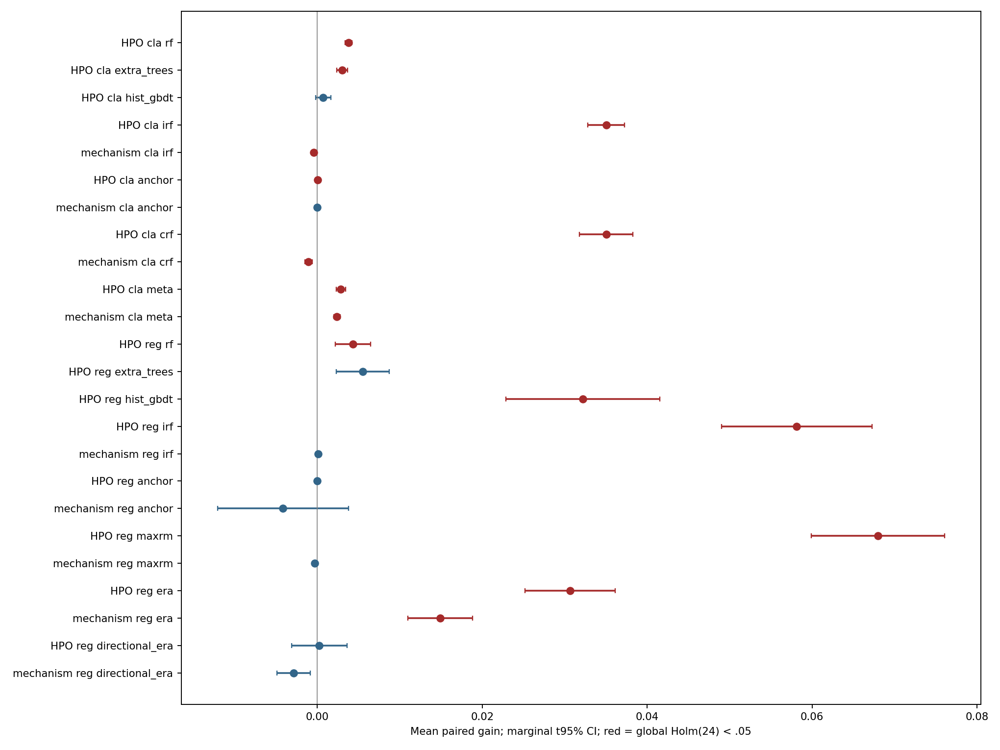

Все методы и strong baselines получили предзаданные пространства гиперпараметров: screening и full-capacity проверка по source domains, без target выбора. Полный дизайн и численные бюджеты: source protocol. Итоговые выбранные настройки, source files и final source models зафиксированы до открытия targets: final protocol. Source selection, все source trials и длительности.
HPO выбиралась один раз на development source каждого контекста. Затем параметры переносились на новые, более крупные source draws. Это оценка заранее настроенных pipelines, а не повтор настройки в каждой MC replica. Предел качества каждого метода и равные CPU budgets не заявляются. Референс использует исправленные реализации и ограниченный исходный grid; это новый контроль, а не подмена исторических v1/v2.
Завершено jobs: 272; target-domain metric rows: 16200. Основных тестов: 24, завершены: 24; Holm-significant: 15. Источник каждого числа: final integrity, таблица тестов, replica contrasts. Статусы пропусков нельзя заменять нулями или игнорировать при complete-case тестировании.

HPO = tuned − source-selected restricted reference; mechanism = tuned − own matched-capacity control. Для classification используется разность AUROC; для regression — разность MSE с обратным знаком, делённая на full-source variance. Сначала macro target domains и model seeds, затем равновесное усреднение зарегистрированных сценариев внутри независимой MC replica. Exact two-sided sign test проверяет знаки, не нулевое среднее; нулевые contrasts исключаются. Один Holm family охватывает все основные тесты. CI — маргинальный t интервал среднего, не simultaneous CI. Статистика и filters, исходные per-domain метрики.
Свежие synthetic draws независимы от прежних draw, но относятся к уже известным механизмам. Это не подтверждение на новой семье реальных задач. ACSIncome/PublicCoverage используют одни новые штаты и принадлежат одной survey family; source resamples перекрываются, поэтому real результаты описательные. Для Beijing/Appliances выполнена source настройка, нового независимого real target в прежних данных нет. Старые v1/v2 targets не использовались.
Положительный HPO contrast показывает пользу данного source-only поиска при заданном бюджете; отрицательный — возможную ошибку переноса source ranking или избыточную capacity. Отсутствие значимости не доказывает эквивалентности. Mechanism gains не следует путать с победой над strong baselines: source-selected baseline comparison. Meta остаётся интерпретацией, IRF/CRF/MaxRM — независимыми реализациями, не точными репликациями авторских экспериментов.
Алгоритмы и выбранные настройки после target доступа не менялись. Сохраняются исходные failures, source receipts, матричные hashes и predictions. Локальные timestamps и hashes не являются OS-level независимым доказательством отсутствия любого ручного доступа. Полные predictions/models локальны; в Git находятся протоколы, таблицы, реестр hashes и отчёт.
| hypothesis | task | method | replicas | mean | ci_low | ci_high | p_value | nonzero_replicas | status | p_holm |
|---|---|---|---|---|---|---|---|---|---|---|
| HPO | classification | rf | 10 | 0.00376569 | 0.00336191 | 0.00416947 | 0.00195312 | 10 | complete | 0.046875 |
| HPO | classification | extra_trees | 10 | 0.00300226 | 0.00233086 | 0.00367365 | 0.00195312 | 10 | complete | 0.046875 |
| HPO | classification | hist_gbdt | 10 | 0.000692688 | -0.000229363 | 0.00161474 | 0.34375 | 10 | complete | 1 |
| HPO | classification | irf | 10 | 0.0350306 | 0.0327961 | 0.037265 | 0.00195312 | 10 | complete | 0.046875 |
| mechanism | classification | irf | 10 | -0.000430632 | -0.000640925 | -0.00022034 | 0.00195312 | 10 | complete | 0.046875 |
| HPO | classification | anchor | 10 | 2.76657e-05 | 1.18212e-05 | 4.35101e-05 | 0.00195312 | 10 | complete | 0.046875 |
| mechanism | classification | anchor | 10 | -4.92083e-05 | -0.000329197 | 0.000230781 | 0.753906 | 10 | complete | 1 |
| HPO | classification | crf | 10 | 0.0350341 | 0.0317975 | 0.0382708 | 0.00195312 | 10 | complete | 0.046875 |
| mechanism | classification | crf | 10 | -0.00108649 | -0.00154222 | -0.000630757 | 0.00195312 | 10 | complete | 0.046875 |
| HPO | classification | meta | 10 | 0.00284956 | 0.00228028 | 0.00341884 | 0.00195312 | 10 | complete | 0.046875 |
| mechanism | classification | meta | 10 | 0.00237246 | 0.00198217 | 0.00276274 | 0.00195312 | 10 | complete | 0.046875 |
| HPO | regression | rf | 10 | 0.00429709 | 0.00214493 | 0.00644925 | 0.00195312 | 10 | complete | 0.046875 |
| HPO | regression | extra_trees | 10 | 0.00548895 | 0.00227085 | 0.00870706 | 0.0214844 | 10 | complete | 0.193359 |
| HPO | regression | hist_gbdt | 10 | 0.0321844 | 0.0228493 | 0.0415195 | 0.00195312 | 10 | complete | 0.046875 |
| HPO | regression | irf | 10 | 0.058144 | 0.049008 | 0.0672801 | 0.00195312 | 10 | complete | 0.046875 |
| mechanism | regression | irf | 10 | 7.51919e-05 | -8.5505e-05 | 0.000235889 | 0.753906 | 10 | complete | 1 |
| HPO | regression | anchor | 10 | 0 | 0 | 0 | 1 | 0 | complete | 1 |
| mechanism | regression | anchor | 10 | -0.0041625 | -0.0121078 | 0.00378277 | 1 | 10 | complete | 1 |
| HPO | regression | maxrm | 10 | 0.0679954 | 0.0599163 | 0.0760745 | 0.00195312 | 10 | complete | 0.046875 |
| mechanism | regression | maxrm | 10 | -0.000338011 | -0.00059319 | -8.28312e-05 | 0.109375 | 10 | complete | 0.875 |
| HPO | regression | era | 10 | 0.0306527 | 0.0252067 | 0.0360986 | 0.00195312 | 10 | complete | 0.046875 |
| mechanism | regression | era | 10 | 0.0148987 | 0.0109572 | 0.0188402 | 0.00195312 | 10 | complete | 0.046875 |
| HPO | regression | directional_era | 10 | 0.000232153 | -0.00310619 | 0.0035705 | 0.753906 | 10 | complete | 1 |
| mechanism | regression | directional_era | 10 | -0.00289297 | -0.00491141 | -0.000874534 | 0.109375 | 10 | complete | 0.875 |